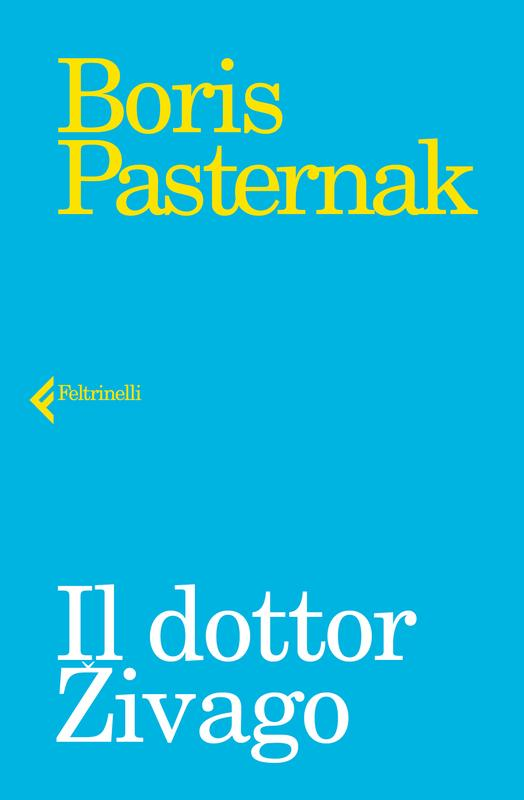
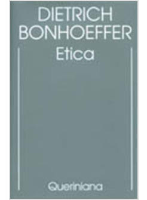
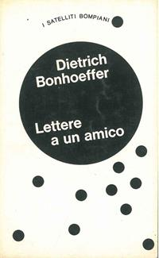
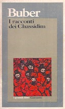
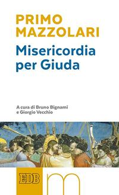
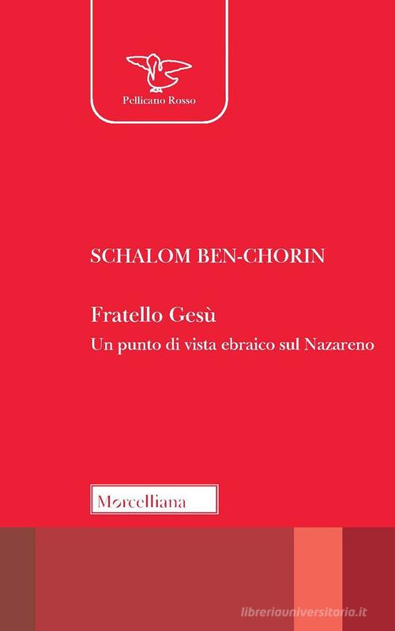

35:49 · 15 OPERE
Il paradiso delle piccole cose.
Il filo del discorso
Il libro-intervista Il paradiso delle piccole cose offre a Dr Divago l’occasione di ricordare Paolo De Benedetti e, attraverso la sua esperienza, un modo di intendere il lavoro culturale come relazione, cura e disponibilità al dialogo. Le conversazioni raccolte con Paolo e Maria sono presentate come un percorso fra vita familiare, editoria, studio biblico e incontri personali. La premessa di Raffaello Zini e il ricordo di un primo contatto telefonico mostrano, nella lettura del relatore, una accessibilità intellettuale lontana dal culto del personaggio irraggiungibile. Le storie del dattiloscritto del Dottor Živago, della pubblicazione di Bonhoeffer e dell’Enciclopedia europea diventano esempi di scelte editoriali guidate dall’attenzione ai contenuti. La parte centrale contrappone questo ideale alla velocità, al conformismo e alla burocrazia del sapere contemporanei: è una valutazione del relatore, non una misura complessiva della cultura attuale. Il discorso passa quindi all’interpretazione biblica e al dialogo ebraico-cristiano. De Benedetti è ricordato come maestro capace di affiancare prospettive differenti senza chiudere il testo in una sola lettura. Alla rappresentazione del divino viene accostata la dimensione dell’ascolto, sviluppata attraverso la voce di sottile silenzio e un confronto con Eraclito. Il finale legge una domanda su Giuda: l’interrogativo sulla responsabilità divina non viene sciolto in una risposta definitiva, ma diventa invito a una relazione dialogica. Le note precisano ruoli editoriali e traduzioni, distinguono i riferimenti certi dalle allusioni e non assumono come fatti alcune digressioni storiche non dimostrate.
I libri nel discorso

Il paradiso delle piccole cose. Paolo e Maria De Benedetti si raccontano
Copertina: Imprimatur · 2014 · prefazione Umberto Eco
Copertina autentica Imprimatur del 2014, con autori e sottotitolo corrispondenti. Il watermark della libreria è conservato. Non è la riedizione Aliberti del 2025 e il carattere di ultima intervista non è certificato.
Il paradiso delle piccole cose, Paolo e Maria De Benedetti, curatori Pietro Mariani Cerati e Luigi Rigazzi e anno 2014 espliciti; volume principale del contributo.
Passaggio 0:14 ↗ · Fonti e libro ↗
Il pendolo di Foucault
Copertina: La nave di Teseo · Oceani 50, 2018
Copertina autentica La nave di Teseo, edizione 2018. Il romanzo originale è del 1988; il riferimento bibliografico dell’immagine è successivo alla registrazione del 14 ottobre 2018 e non identifica il volume del video.
Eco e Il pendolo di Foucault espliciti nel riferimento a un personaggio ispirato da De Benedetti.
Passaggio 3:54 ↗ · Fonti e libro ↗
Il dottor Živago
Copertina: Feltrinelli, I Narratori, 2017, traduzione di Serena Prina, 640 pagine; non il dattiloscritto con coperta verde ricordato nel video.
Immagine autentica dell’opera, controllata visivamente; l’edizione di riferimento non è attribuita al filmato.
Il Dottor Živago di Pasternak esplicito nel ricordo della traduzione dattiloscritta con copertina verde.
Passaggio 7:18 ↗ · Fonti e libro ↗
Resistenza e resa
Copertina: Queriniana · Resistenza e resa · edizione di riferimento
Immagine associata all’ISBN di riferimento e controllata visivamente; edizione e traduzione non identificate come quelle citate o lette nel video.
Resistenza e resa esplicito fra le pubblicazioni italiane di Bonhoeffer.
Passaggio 10:37 ↗ · Fonti e libro ↗
Etica
Copertina: Queriniana, 1995, edizione critica italiana a cura di Alberto Gallas, 512 pagine; non l’edizione Bompiani ricordata.
Immagine autentica dell’opera, controllata visivamente; l’edizione di riferimento non è attribuita al filmato.
Etica di Bonhoeffer esplicita insieme a Resistenza e resa e Lettere a un amico.
Passaggio 10:44 ↗ · Fonti e libro ↗
Lettere a un amico
Copertina: Bompiani, 1969, I satelliti Bompiani; traduzione di Sergio Bologna. Edizione di riferimento, non esemplare attribuito al video.
Immagine autentica dell’opera, controllata visivamente; l’edizione di riferimento non è attribuita al filmato.
Lettere a un amico di Bonhoeffer esplicito; pubblicazione distinta, collegata al corpus delle lettere dal carcere.
Passaggio 10:44 ↗ · Fonti e libro ↗
Enciclopedia europea
Fotografia dei dodici volumi dell’Enciclopedia europea: Garzanti · 1976-1984 · fotografia dell’opera in dodici volumi
Fotografia libraria autentica dell’opera in dodici volumi: dorsi, titolo e marchio Garzanti leggibili. Non è una copertina singola né un’edizione tascabile. Nessun ISBN ricavato dal codice commerciale del venditore.
Enciclopedia europea Garzanti esplicita, ricordata come progetto centrale del lavoro di De Benedetti.
Passaggio 14:32 ↗ · Fonti e libro ↗
I racconti dei Chassidim
Copertina: Garzanti, I grandi libri, introduzione di Furio Jesi e traduzione di Gabriella Bemporad; anno dell’esemplare non leggibile dalla copertina fotografata.
Immagine autentica dell’opera, controllata visivamente; l’edizione di riferimento non è attribuita al filmato.
I racconti dei Hassidim di Martin Buber e Garzanti espliciti; grafia del titolo normalizzata sull’edizione Garzanti.
Passaggio 15:44 ↗ · Fonti e libro ↗
Zibaldone di pensieri
Copertina: Feltrinelli · Universale Economica, I classici
Leopardi e Zibaldone espliciti, ma il passo sul tempo di composizione non è individuato con certezza.
Passaggio 16:41 ↗ · Fonti e libro ↗
Primo libro dei Re
Identificazione probabile
Copertina della Bibbia che contiene il Primo libro dei Re: San Paolo, 2014 · Nuova Versione dai Testi Antichi · edizione di riferimento
Copertina autentica dell’intera Bibbia San Paolo; il Primo libro dei Re è un testo contenuto nella raccolta. Nessuna edizione autonoma né traduzione specifica vengono attribuite al filmato.
Una voce di sottile silenzio: probabile richiamo a 1 Re 19,12, senza pronuncia del titolo; resa interpretativa distinta dalla traduzione CEI.
Passaggio 29:14 ↗ · Fonti e libro ↗Esodo
Identificazione probabile
Volume di riferimento: San Paolo, 2014 · Nuova Versione dai Testi Antichi · edizione di riferimento
Copertina della Bibbia completa, che contiene l’Esodo. Non è la copertina di un’edizione autonoma del libro biblico; la traduzione non è attribuita al contributo.
Mosè e Ietro, con rapporto familiare deformato e ipotesi sul culto di Akhenaton: probabile riferimento al racconto di Esodo, titolo non pronunciato.
Passaggio 30:16 ↗ · Fonti e libro ↗
Frammenti
Copertina: BUR · a cura di Francesco Fronterotta, testo greco a fronte, 2013
Immagine autentica dell’opera, controllata visivamente; l’edizione di riferimento non è attribuita al filmato.
Eraclito e primo frammento espliciti; il relatore dichiara di mescolarvi un’altra immagine biblica.
Passaggio 31:08 ↗ · Fonti e libro ↗Proverbi
Identificazione probabile
Copertina della Bibbia che contiene Proverbi: San Paolo, 2014 · Nuova Versione dai Testi Antichi · edizione di riferimento
Copertina dell’intera Bibbia. Non rappresenta un’edizione autonoma dei Proverbi e non identifica l’edizione citata nel video.
La sapienza che grida nelle strade: allusione probabile a Proverbi 1,20–21, titolo non pronunciato e accostamento libero a Eraclito.
Passaggio 31:14 ↗ · Fonti e libro ↗
Nostro fratello Giuda
Identificazione probabile
Volume di riferimento: Misericordia per Giuda: Copertina del volume di riferimento Misericordia per Giuda, EDB 2015, a cura di Bruno Bignami e Giorgio Vecchio, 64 pagine.
La fotografia mostra il volume EDB Misericordia per Giuda, non una copertina autonoma recante il titolo dell’omelia. La relazione con l’omelia è documentata dalla presentazione della Diocesi di Cremona e della Fondazione Mazzolari; l’edizione non è attribuita al video.
Don Primo Mazzolari e omelia su Giuda chiamato fratello: probabile Nostro fratello Giuda del Giovedì Santo 1958, non Venerdì di Pasqua.
Passaggio 33:34 ↗ · Fonti e libro ↗
Fratello Gesù. Un punto di vista ebraico sul Nazareno
Copertina: Morcelliana, 2022, Pellicano rosso, 336 pagine, presentazione di Renzo Fabris; riedizione successiva al video.
Immagine autentica dell’opera, controllata visivamente; l’edizione di riferimento non è attribuita al filmato.
Schalom Ben-Chorin e Fratello Gesù espliciti nella domanda su Giuda letta dal libro-intervista.
Passaggio 33:41 ↗ · Fonti e libro ↗